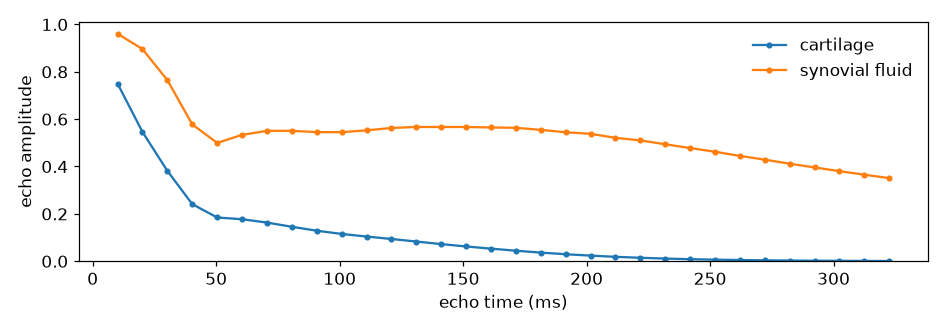
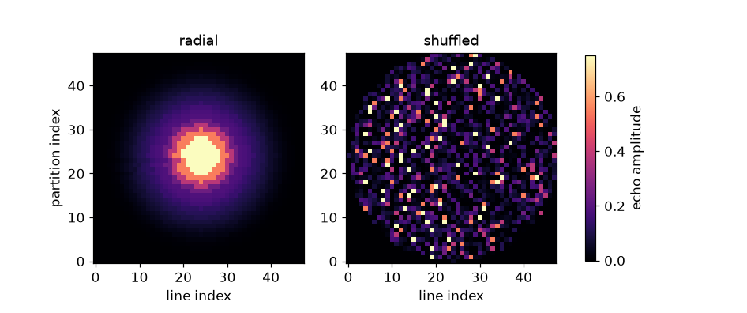
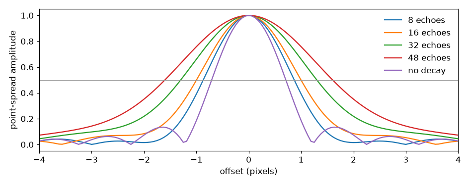

Note
Go to the end to download the full example code.
Echo train length, signal envelope and point spread#
A three-dimensional fast spin echo reads one (line, partition) view per
refocused echo, so the amplitude the train has left at echo \(m\) becomes
the weight of whichever view that echo reads. The ordering is the map from echo
index to k-space position, and the weighting it produces is a filter applied to
the image: its inverse Fourier transform is the point-spread function of the
acquisition.
This example takes the refocusing schedule and echo spacing out of designed sequences, simulates the echo amplitudes with an extended phase graph, assembles the k-space weighting from the sequence’s own view labels, and measures the width of the resulting point-spread function against the train length and the acquisition time.
import numpy as np
import torchsim
from pypulseqpp import sequences
#: The field of view and matrix every configuration below is designed at.
PRESCRIPTION = {
"fov_x": 200e-3,
"fov_y": 200e-3,
"fov_z": 200e-3,
"n_x": 64,
"n_y": 48,
"n_z": 48,
}
#: Relaxation times (ms) of the two tissues the envelopes are simulated for,
#: cartilage and synovial fluid.
TISSUES = {"cartilage": (1200.0, 35.0), "synovial fluid": (3600.0, 250.0)}
The echo envelope#
The design writes its refocusing schedule and echo spacing into the sequence,
so the envelope is simulated from what will be played rather than from what
was asked for. flip_modulation="optimized" designs the schedule with
torchsim against a prescribed contrast, which leaves the leading echoes below
180 degrees and the rest of the train at full refocusing.
reference = sequences.fse3D_sequence(
**PRESCRIPTION,
te=None,
tr=1.0,
etl=32,
refocusing_angle_deg=180.0,
ordering="radial",
flip_modulation="optimized",
)
angles = np.asarray(reference.get_definition("RefocusingFlipAngles"))
esp_ms = 1e3 * reference.get_definition("EchoSpacing")[0]
envelopes = {
name: np.abs(np.asarray(torchsim.fse_sim(flip=angles, ESP=esp_ms, T1=t1, T2=t2)))
for name, (t1, t2) in TISSUES.items()
}
/opt/hostedtoolcache/Python/3.12.14/x64/lib/python3.12/site-packages/torch/jit/_script.py:1491: FutureWarning: `torch.jit.script` is deprecated. Please switch to `torch.compile` or `torch.export`.
warnings.warn(
Over a train this long the envelope follows the transverse relaxation of each tissue: the schedule shapes the first few echoes, and from there the amplitude is set by \(T_2\) and the echo spacing. The two tissues therefore reach the end of the train with very different amplitudes, and the weighting below is the short-\(T_2\) one.

<Figure size 946x330 with 1 Axes>
From the echo index to a k-space weighting#
The view labels record which line and partition each acquisition read and at which echo, so the weighting follows from the sequence without restating the ordering. Radial ordering sorts views by their distance from the centre of k-space, which turns the envelope into a radially symmetric filter; the shuffled ordering draws each echo’s views from the whole of k-space instead.
def weighting(seq, amplitude):
"""The amplitude each acquired view is read with, as a ``(line, partition)`` map."""
labels = seq.evaluate_labels(evolution="adc")
weight = np.zeros((PRESCRIPTION["n_y"], PRESCRIPTION["n_z"]))
weight[labels["LIN"], labels["PAR"]] = amplitude[labels["ECO"]]
return weight
shuffled = sequences.fse3D_sequence(
**PRESCRIPTION,
te=None,
tr=1.0,
etl=32,
ordering="shuffling",
flip_modulation="optimized",
)
cartilage = envelopes["cartilage"]
orderings = {
"radial": weighting(reference, cartilage),
"shuffled": weighting(shuffled, cartilage),
}

<Figure size 946x396 with 3 Axes>
The elliptical edge is the corner of k-space the design leaves unsampled. Under radial ordering the weighting decreases outward and one point-spread function describes the whole image. Under shuffling the centre of k-space is read at many different echoes, so the decay is a dimension a reconstruction can separate rather than a filter applied to a single image, and the point-spread measurement below does not apply to it.
echoes reading the central 4-pixel disc:
radial [0 1]
shuffled [ 0 3 5 6 7 8 9 10 11 12 13 14 15 17 18 19 20 21 22 23 24 26 27 28
29 30 31]
Train length against point spread#
The train length sets how many excitations the volume takes and how far the envelope has decayed by the edge of k-space. The point-spread function is the inverse Fourier transform of the weighting, zero-padded so its width can be measured between samples, and its width is quoted against the width the same sampled region gives with no decay at all.
#: Factor the weighting is zero-padded by before its transform, so the
#: point-spread function is sampled finely enough to interpolate a width on.
PAD = 16
def point_spread(weight, pad=PAD):
"""Central profile of the point-spread function, in pixels of offset."""
size = weight.shape[0]
padded = np.zeros((size * pad, size * pad))
corner = (size * pad - size) // 2
padded[corner : corner + size, corner : corner + size] = weight
psf = np.abs(np.fft.fftshift(np.fft.ifft2(np.fft.ifftshift(padded))))
profile = psf[:, psf.shape[1] // 2]
profile = profile / profile.max()
offsets = (np.arange(profile.size) - profile.size // 2) / pad
return offsets, profile
def full_width(offsets, profile):
"""Width of the profile at half its maximum, in pixels."""
spacing = offsets[1] - offsets[0]
peak = int(np.argmax(profile))
edges = []
for step in (-1, 1):
index = peak
while 0 < index < profile.size - 1 and profile[index] > 0.5:
index += step
below, above = profile[index], profile[index - step]
edges.append(offsets[index] - step * spacing * (0.5 - below) / (above - below))
return edges[1] - edges[0]
The train lengths differ in nothing else: the same views are read, at the same echo spacing, with the schedule each length is designed with.
rows = []
profiles = {}
for etl in (8, 16, 32, 48):
seq = sequences.fse3D_sequence(
**PRESCRIPTION,
te=None,
tr=1.0,
etl=etl,
refocusing_angle_deg=180.0,
ordering="radial",
flip_modulation="optimized",
)
schedule = np.asarray(seq.get_definition("RefocusingFlipAngles"))
spacing_ms = 1e3 * seq.get_definition("EchoSpacing")[0]
widths = {}
for name, (t1, t2) in TISSUES.items():
amplitude = np.abs(
np.asarray(torchsim.fse_sim(flip=schedule, ESP=spacing_ms, T1=t1, T2=t2))
)
offsets, profile = point_spread(weighting(seq, amplitude))
widths[name] = full_width(offsets, profile)
if name == "cartilage":
profiles[f"{etl} echoes"] = (offsets, profile)
rows.append(
{
"etl": etl,
"shots": int(seq.get_definition("NumShots")[0]),
"duration": seq.duration()[0],
"fwhm": widths,
}
)

train shots duration cartilage synovial fluid
8 224 224.0 s 1.738 px 1.471 px
16 112 112.0 s 1.995 px 1.453 px
32 56 56.0 s 2.599 px 1.513 px
48 38 38.0 s 3.203 px 1.602 px
no decay 1.417 px
<Figure size 946x374 with 1 Axes>
Every acquired view is read at every train length, so the acquisition time is inversely proportional to the train length while the width is not. The early steps exchange a large fraction of the acquisition time for a small fraction of width and the late ones exchange comparable fractions of both, which places the useful operating point where the envelope is still close to its maximum when the ordering reaches the edge of k-space. Where that falls is set by the echo spacing and by the \(T_2\) the sharpness is wanted for, which is why the two tissues are not blurred alike by the same train. The profiles drawn are the short-\(T_2\) ones.
Total running time of the script: (0 minutes 5.977 seconds)